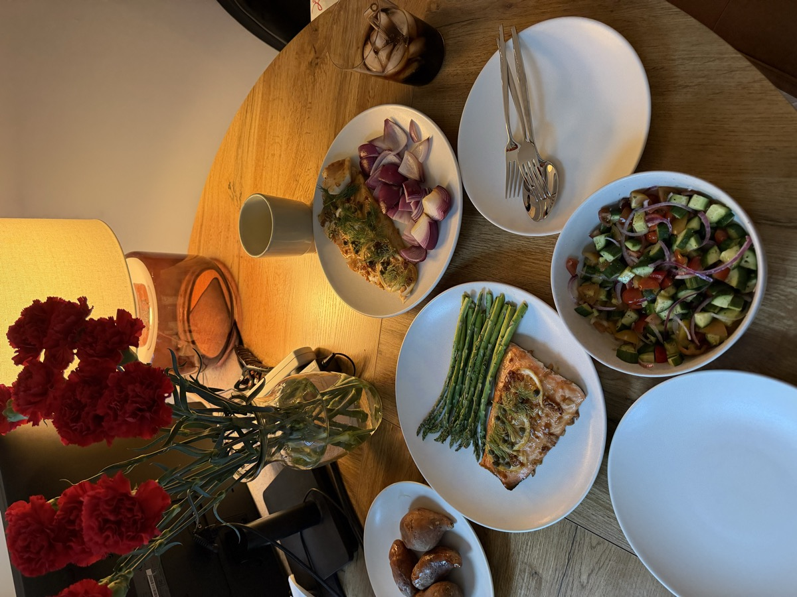
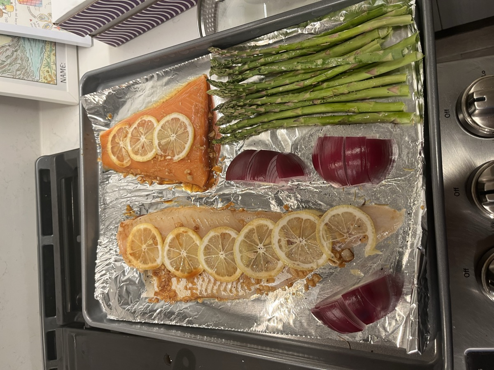
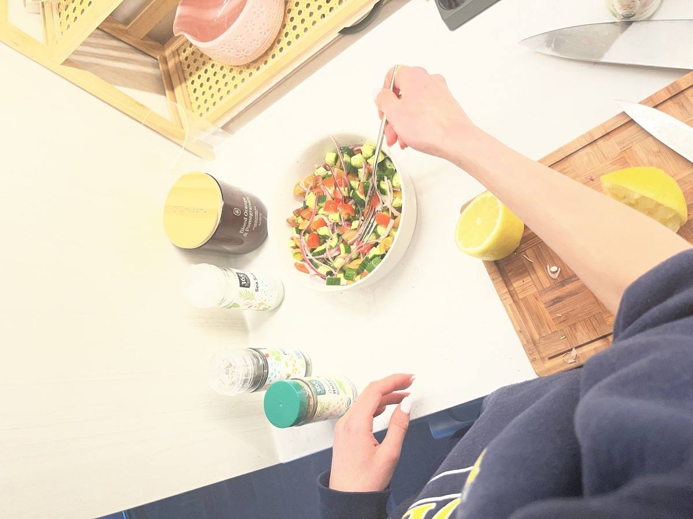
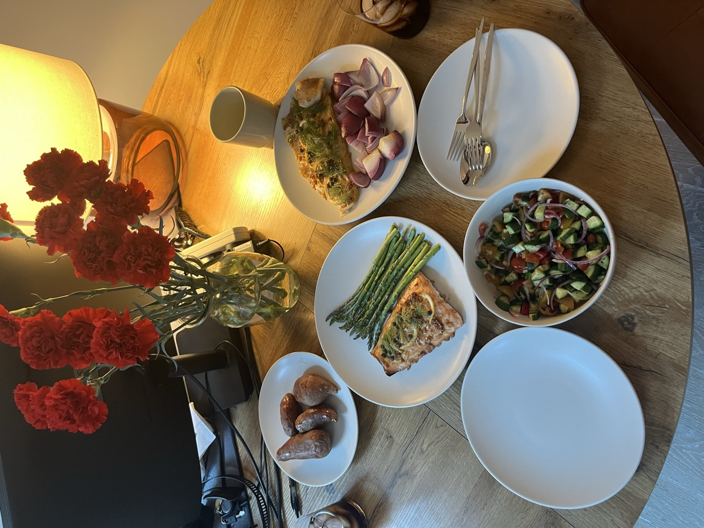
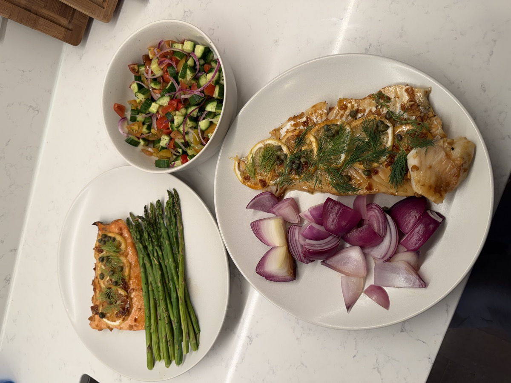

Salmon vs Cod ShowdownLemon Herb Sheet Pan Salmon vs Cod
A head-to-head showdown: salmon and cod side by side on one sheet pan, both topped with lemon slices, alongside crispy asparagus and caramelized red onions — served with a bright cucumber-tomato salad. Which fish reigns supreme?




Ingredients
- 1 salmon fillet
- 1 cod fillet
- 2 sweet potatoes
- 1 bunch asparagus, trimmed
- 2 red onions, quartered
- 1 lemon, thinly sliced
- Fresh dill & capers
- 3–4 cloves garlic, minced
- Olive oil
- Ponzu sauce
- Soy sauce
- Honey
- Lemon juice
- Salt & pepper
- 1 cucumber, diced (for salad)
- 2 tomatoes, diced (for salad)
- ½ red onion, thinly sliced (for salad)
- Italian seasoning (for salad)
Steps
- Preheat oven to 400°F (200°C). Poke holes in the sweet potatoes with a fork, wrap them in aluminum foil, and put them in the oven. Set the oven timer to 45 minutes. (Note: this timing is for small to medium sweet potatoes only.)
- Make the salad so it has time to soak up the dressing: dice cucumbers and tomatoes, thinly slice red onion and shock it in an ice bath to mellow the spice. Toss together and dress with lemon juice, olive oil, salt, black pepper, and Italian seasoning. Set aside.
- Prepare the sauce: mince the garlic and combine with olive oil, ponzu, soy sauce, honey, and a bit of lemon juice in a small saucepan.
- Simmer the sauce on low for about 15 minutes to reduce, stirring occasionally.
- Brush the reduced sauce onto the fish. Season everything with salt & pepper and scatter capers over top. Layer lemon slices on top.
- At the 12-minute mark, line a sheet pan with foil. Place the salmon and cod fillets on the pan. Arrange asparagus and quartered red onions around the fish.
- Bake for the final 12 minutes until fish is flaky and asparagus is tender-crisp.
- Top the fish with fresh dill. Unwrap the sweet potatoes, plate everything up, and enjoy!
Who Won?
After tasting both fish side by side, the verdict was unanimous.
Cod takes the crown!
John voted Cod
Stephanie voted Cod